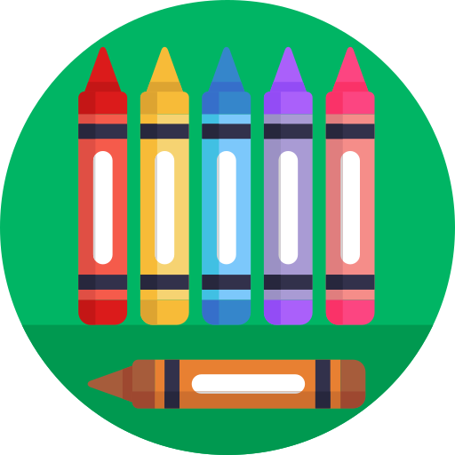
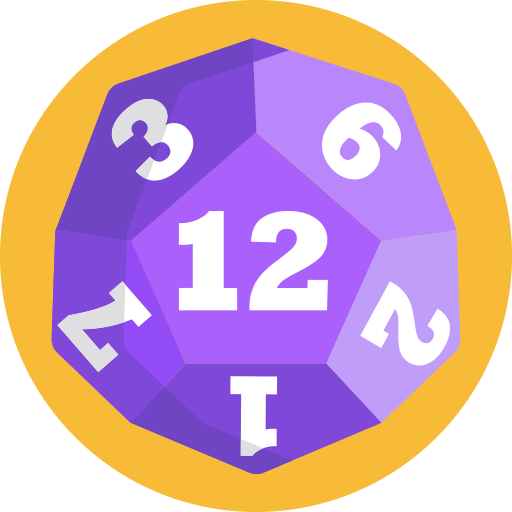

<div class="container bg-img">
  <div class="settings">
    <ion-fab slot="fixed" vertical="top" horizontal="start" class="topics ion-padding-top">
      <ion-fab-button color="tertiary">
        
      </ion-fab-button>
      <ion-fab-list side="bottom">
        <ion-fab-button color="dark" (click)="chooseTopic('colors')">
          
        </ion-fab-button>
        <ion-fab-button color="dark" (click)="chooseTopic('animals')">
          
        </ion-fab-button>
        <ion-fab-button color="dark" (click)="chooseTopic('numbers')">
          
        </ion-fab-button>
      </ion-fab-list>
    </ion-fab>
    <ion-fab slot="fixed" vertical="top" horizontal="end" class="langs ion-padding-top">
      <ion-fab-button color="tertiary">
        
      </ion-fab-button>
      <ion-fab-list side="bottom">
        <ion-fab-button color="dark" (click)="this.chosenLang = 'es'">
          
        </ion-fab-button>
        <ion-fab-button color="dark" (click)="this.chosenLang = 'en'">
          
        </ion-fab-button>
        <ion-fab-button color="dark" (click)="this.chosenLang = 'pt'">
          
        </ion-fab-button>
      </ion-fab-list>
    </ion-fab>
  </div>

  <div class="cards" *ngIf="chosenTopic">
    <ion-button class="card ion-margin-bottom" [id]="card" *ngFor="let card of cardsToShow" (click)="pressCard(card)"
      [disabled]="!chosenLang">
      
    </ion-button>
  </div>
</div>

<ion-fab slot="fixed" vertical="bottom" horizontal="start">
  <ion-fab-button shape="round" color="success" (click)="signOut()">
    <ion-icon name="log-out-outline"></ion-icon>
  </ion-fab-button>
</ion-fab>